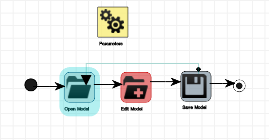
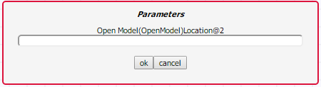
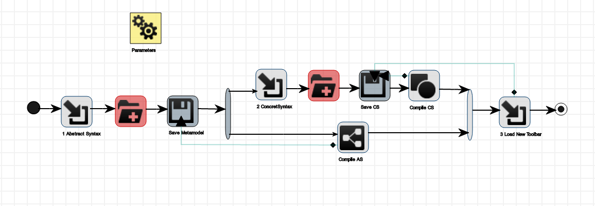
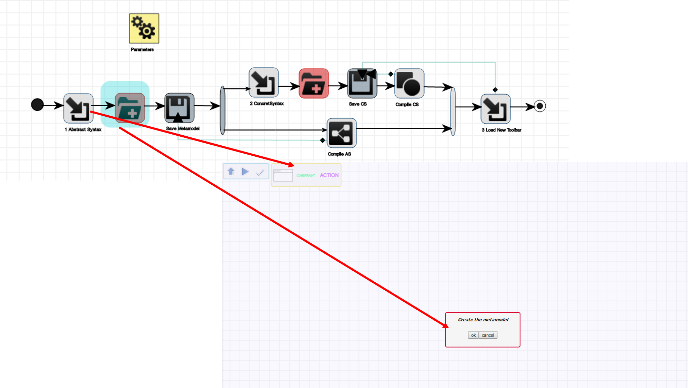
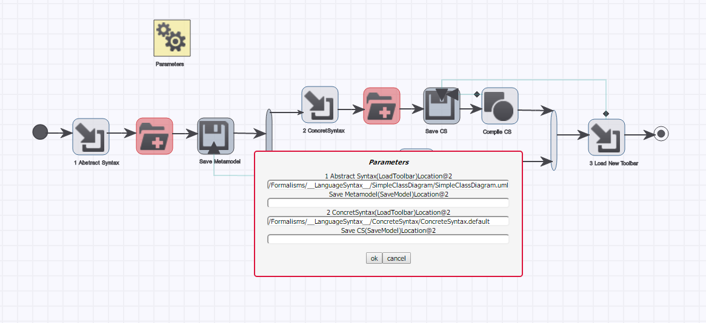
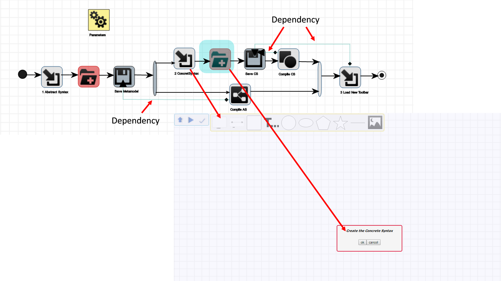
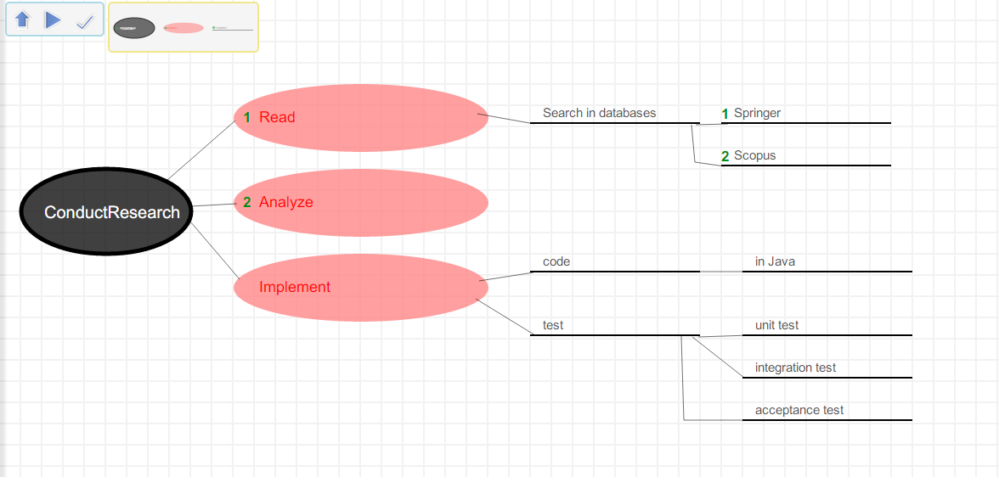

Workflows¶
A Workflow is MDE-based solution where the user defines a “workflow” that can be parametrized at run-time and executed. This Workflow is a DSL for defining activities that can be performed in MDE tools. In the next subsections, we explain how to create and use these elements.
An activity is composed of tasks, to define concrete actions to be performed. we want to automate user’s activities as much as possible, therefore most of the tasks are automatic: they do not require human interaction. For example, loading a formalism to create a metamodel is a task that can be automated, since the location of that formalism is known.
An activity conforming to the metamodel starts from the initial node and terminates at the final node. Tasks can be sequenced one after the other.
Using Workflows¶
Using a workflow is easy, and requires you to make use of the Workflow toolbar:

You must perform each of the following activities:
- Selects which workflow you desire to enact.
- Set the run-time parameters.
- Execute the workflow
Opening the workflow¶
To open a Workflow, press the fifth button of the MainMenu toolbar Overview. Opening a templeate model replaces the currently opened model, if any. If there are any unsaved changes in the currently opened model, you will receive a warning.
- Click on Open Model button Overview
- Select Formalism/Workflows/Templates…
- Select the file.
- Click on Ok button
Setting the run-time parameters¶
A prerequisite to execute a workflow is to set the run-time parameters. To do this, the user pushes the LoadParameters button, the first button on the Workflow toolbar . This creates an instance of the parameter object and pops up a dialog prompting for all required parameters. Write these parameters and push the ok button.
Note
Each parameter must be typed without extension. For example, the class diagram toolbar location is: “/Formalisms/__LanguageSyntax__/SimpleClassDiagram/SimpleClassDiagram.umlIcons.metamodel”, then we should type: “/Formalisms/__LanguageSyntax__/SimpleClassDiagram/SimpleClassDiagram.uml”, where Icons.metamodel was predefined by the designer of this template.
Execute the workflow¶
Click on the Resume Process button, the second button on the Workflow toolbar. This executes the worklow autonomously. When a manual task is reached, a new AToMPM window is opened with all necessary toolbars pre-loaded. A message describing the manual task to perform is displayed to the user and the simulation stops. After the user has completed the task, the user pushes the third button (CompleteTask button) . Then, the window closes and the simulation restarts.
Dependency¶
Workflow parameters are specified once per workflow; however, run-time parameters must be manually specified each time the workflow is executed. Therefore, a Dependency link can be specified between different tasks that share the same run-time parameters.
A dependency link specifies which attribute from the target task gets its value from an attribute in the source task. For example, the location of the *SaveModel task is the same as the location of the texttt{OpenModel}when saving a model we just opened and modified.
Example Workflow for Creating a DSL¶
The image shows the workflow that specifies how to create a DSL and generate a modeling environment for it in AToMPM. The first task is LoadToolbar. Its location parameter is already predefined with the class diagram toolbar, since this is the standard formalism with which one creates a metamodel in AToMPM. The following task is EditModel. In this manual task, the user creates the metamodel of the DSL using class diagrams.
Once this is complete, the workflow restarts executing from that task and proceeds with SaveModel. This task requires a run-time parameter to specify the location of where the metamodel is saved. The user sets the value in the popup dialog wizard.
Now that the metamodel is created, a fork node proposes two flows: one for creating the concrete syntax of the DSL and one to generate the abstract syntax from the metamodel. Recall that the simulation chooses one flow and then the other in no specific order. Suppose the former flow is chosen. Then, a LoadToolbar task is executed to load the concrete syntax toolbar, the standard formalism in AToMPM. This is followed by an EditModel so the user can manually create the shapes of each element of the metamodel. Once this is complete, the workflow restarts and proceeds with a SaveModel task. Recall that the location is a run-time parameter to save the concerte syntax model with a predefined extension. The following task in this flow is GenerateCS.
It takes as run-time parameter the location of where the generated artifact must be output. Specifically, the name used will be also the name of the toolbar that will be used to create a model with this DSL. Therefore, the location of the generated concrete syntax is the same as the location of the concrete syntax model the user created manually. The dependency link prevents the user from having to duplicate parameter values in the pop-up wizard. When the join node is reached, the simulation notices that the second flow was not executed yet. Therefore the next task to be executed is GenerateAS. Its location parameter uses the same value of the location attribute of SaveModel, as depicted by the dependency link between these two tasks. When the join node is reached again, this time all flows were executed and proceeds with the final task LoadToolbar.
As stated before, its location parameter use the same value of the location attribute of previous SaveModel domain-specific model. The simulation ends on a new window open with the new DSL loaded, ready for the user to create his domain-specific model.